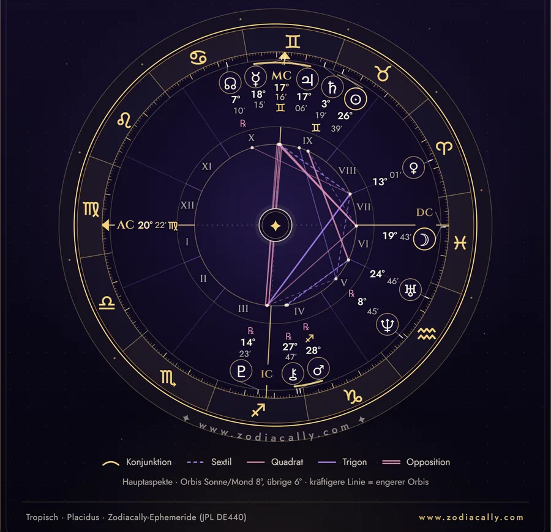
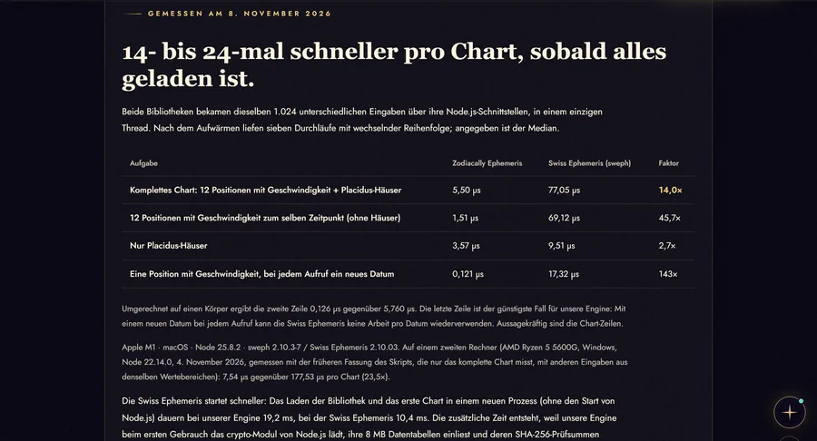
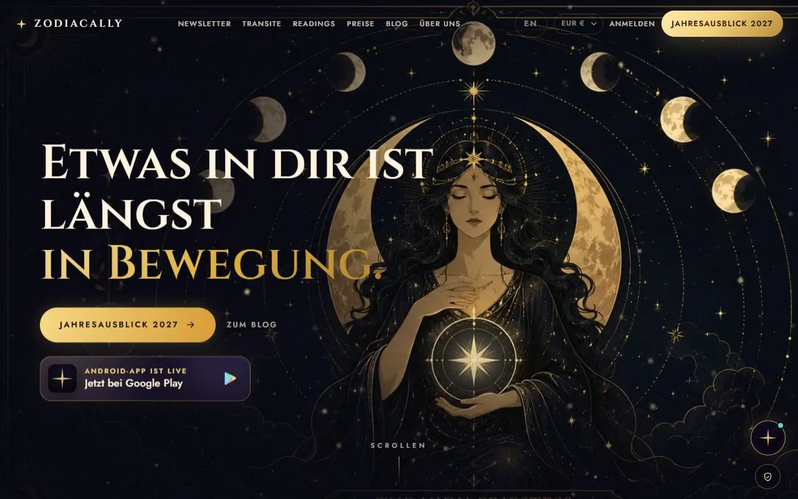

Projekt 1 von 8 · Aleks Paramonov
Zodiacally
Astrologie-Plattform als Website und Android-App, mit eigener Rechenengine und KI-Texten
Website live, App bei Google Play Messseite auf zodiacally.com Rechenengine auf GitHub
- Status
-
- Die App bei Google Play wurde zuletzt am 08.10.2026 aktualisiert.
- Version 1.1.4 ist vorbereitet und noch nicht veröffentlicht.
- Zeitraum
- seit 07/2025, nach einer Pause wieder seit 04/2026
- Mein Anteil
- Allein entwickelt, mit Coding-Agenten als Werkzeug: Konzept, Rechenengine, Website, App, Ablauf der Readings und Bezahlung. Die Texte unter dem Namen Lyra schreibt eine KI nach meinen Vorgaben.
zodiacally.com


Was es tut
Man gibt Geburtsdatum, Geburtszeit und Geburtsort ein, die Software berechnet daraus die Stellung von Sonne, Mond und Planeten und zeichnet das Geburtshoroskop. Eine KI schreibt dazu einen persönlichen Text, auf der Seite „Reading“ genannt, für den Tag, die Woche, den Monat oder das Jahr. Gedacht ist das zur Unterhaltung und Selbstreflexion.
Ohne Konto gibt es einen kostenlosen Transit-Rechner. Er zeigt, wie die Planeten in den nächsten Tagen zum Geburtshoroskop stehen.
Rechenengine Das Programm, das die Stellung der Planeten ausrechnet.
Was ich gelöst habe
Eigene Rechenengine, öffentlich nachgemessen
Die Planetenpositionen berechnet eine eigene Rechenengine auf Basis öffentlicher NASA-Daten. Sie ersetzt in Zodiacally die Rechenbibliothek Swiss Ephemeris. Im öffentlichen Messlauf vom 08.11.2026 wich sie bei Sonne und Mond um weniger als ein Hunderttausendstel Grad von der Swiss Ephemeris ab. Bei anderen Himmelskörpern ist die Abweichung größer, bei Chiron bis 930 Millibogensekunden. Für denselben Zeitpunkt gerechnet, war das Tierkreiszeichen in 0 von 240.000 Positionen anders.
- Sonne
- 3,0 Millibogensekunden
- Mond
- 8,7 Millibogensekunden
- Zum Vergleich
- ein Hunderttausendstel Grad, das sind 36 Millibogensekunden
Gemessen an 20.000 Zeitpunkten von 1900 bis 2100. Messbericht und Code sind öffentlich einsehbar.
zodiacally.com


Auch das steht dort: Beim Start ist die Swiss Ephemeris schneller.
KI-Texte aus berechneten Werten
Die KI bekommt die berechneten Planetenpositionen und Konstellationen als festen Datensatz und schreibt daraus die Deutung. Im Abschnitt „Astrologische Belege“ des Beispiel-Readings steht neben jedem Deutungstext die Konstellation, auf die er sich stützt. Prüfskripte gleichen Deutung und berechnete Werte ab. Ein dokumentierter Lauf vom 06.09.2026 prüfte zwei erfundene Profile ohne Befund, damals noch mit der Swiss Ephemeris.
Konstellation Wie die Planeten zueinander stehen.
zodiacally.com

Bezahlung mit Stripe und ein voller Testlauf
Die Website hat eine Anmeldung mit Konto, bezahlt wird über den Zahlungsdienst Stripe. Für App und Website zusammen gibt es über 4.000 automatisierte Tests.
| 3.056 | Tests |
|---|---|
| 2.924 | bestanden |
| 9 | fehlgeschlagen: 6 Tests erwarteten noch den früheren Kaufablauf, 2 scheiterten an Zeilenenden einer Datendatei, 1 an einer zu engen Bildgrenze unter Windows |
| 123 | übersprungen, 122 davon in früheren Kauf- und Freischaltoberflächen |
Die gezielten Nachtests bestanden. Einen zweiten vollen Lauf gab es nicht.
zodiacally.com

Android-App

Technik
Astro, React, Node.js, PostgreSQL (Supabase), Flutter/Dart, Stripe
Für Entwickler: Aufbau
- Geburtsdaten
- Rechenengine in JavaScript, in der App als Port in Dart
- berechnete Planetenpositionen und Konstellationen als fester Datensatz
- Ein Sprachmodell schreibt die Deutung
- Reading
Dazu: Node.js und Express als API, PostgreSQL bei Supabase mit Row Level Security, Stripe für die Bezahlung.
Zum Nachprüfen
- Transit-Rechner ohne Konto: zodiacally.com/de/transit-rechner